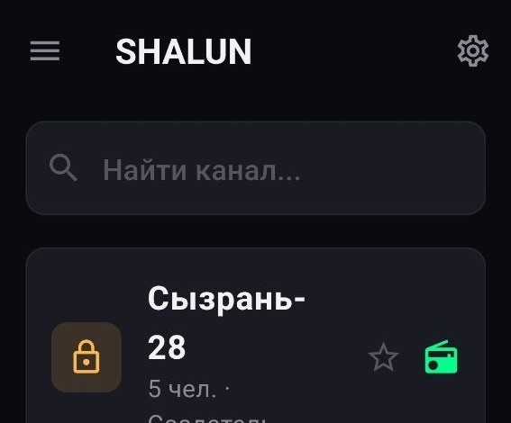

01 · путь голоса
Голос летит быстрее мысли
02 · частоты
Каналы твоего маршрута

Сызрань-28
Базовый канал маршрута №28. Диспетчер ставит задачу, водители отвечают с колёс. Запросы на вход — у админа.
В эфир03 · кто в эфире
Собрано под руль
Водителям
Фон-режим, вибрация, Bluetooth-тангента. Телефону не нужен, руки на руле.
Диспетчерам
Одним нажатием на весь канал. «Говорит: диспетчер» видно у всех сразу.
Стройке
Шумоподавление и автоответ: крановщик слышит прораба сквозь экскаватор.
Охране
Каналы по постам, SOS одной кнопкой, история всех передаваний.
04 · у эфира есть хозяин
Админу всё видно
› эфир открыт · 5 в канале
sh$ request list
› Серёга (Актобе) — на вход
sh$ approve 1 · Серёга
› допущен · шлёт «привет с М-32»
sh$ mute 3
› «Шалун-7» замьючен
sh$ floor release
› эфир свободен
Первым в канал зашёл — ты и админ. Дальше эфир живёт по твоим правилам:
- Запросы на вход: принять / отшить в один тап
- Мут болтуна, кик шаловливых, бан навсегда
- Код-приглашение для своих, ротация в пару секунд
- История эфира: кто, что и когда передавал
05 · по-простому
Частые вопросы с трассы
Это не радио, а обычный мобильный интернет: голос идёт как сообщение в мессенджере, только на весь канал и мгновенно. Никаких частот, разрешений и ГРЧЦ. Нужна связь — нужен трафик, как у навигатора.
Говорящий льёт ~24 кбит/с: сорок минут базара — около 7 МБ. Тишину DTX вообще не передаёт, поэтому в кармане батарея почти не тает.
Кнопка станет серой, статус покажет «нет связи» — как настоящая рация без башни. Как поймаешь сеть, догоняешь эфир в один тап. На трассе М-5 сеть есть почти везде, а в глухих местах и обычная рация бы молчала.
Ключ RSA-2048 рождается на твоём телефоне и с него не уходит. Позывной — это как наклейка на капоте: как тебя слышат в эфире, а доступ в канал решает админ.
Приложение сейчас в разработке: доводим эфир до ума, потом общий релиз. Хочешь на первый обкат — пиши админу, поставим вручную.